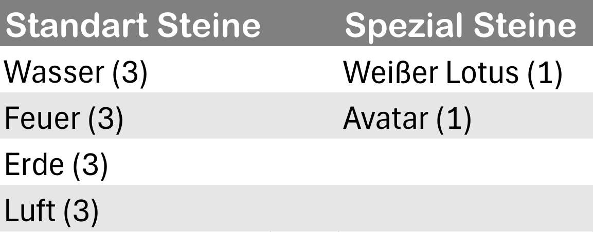
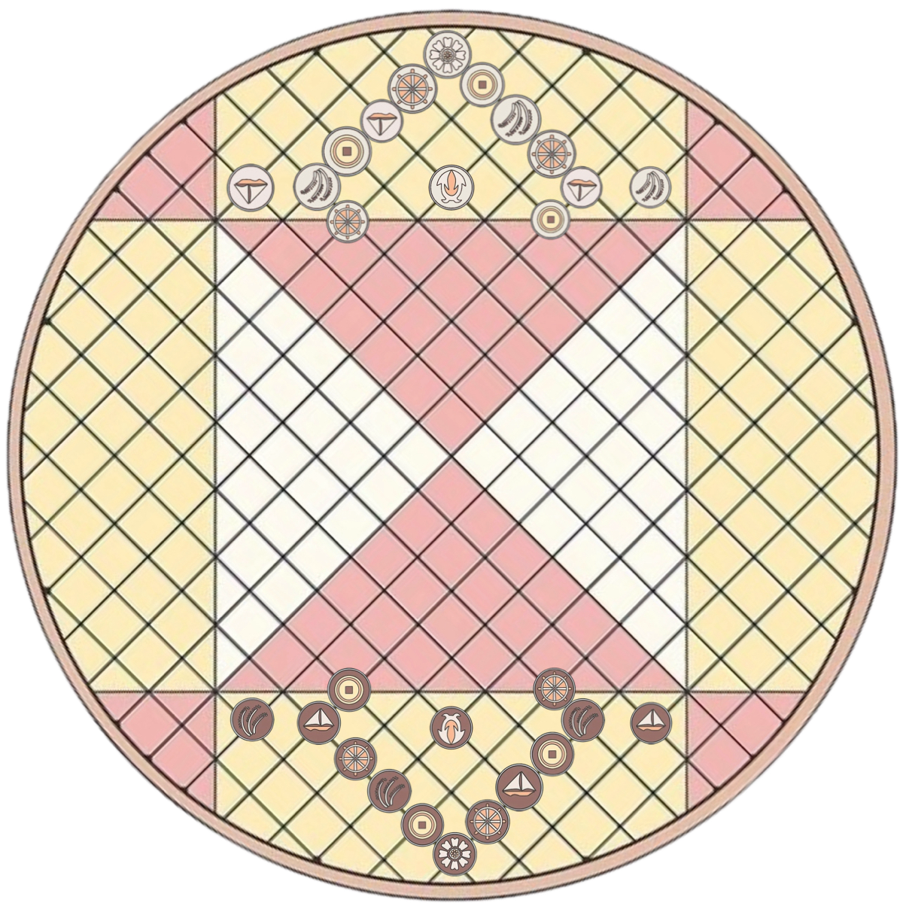

Spielmaterialien
Das Brett
Modernes Pai Sho verwendet ein Standard-Pai-Sho-Brett, wie im Abschnitt "Erste Schritte" beschrieben.
Die Spielsteine
Jeder Spieler bekommt 14 Steine.
Gameplay
Im Gegensatz zu den meisten Stilen von Pai Sho spielt das moderne Pai Sho mit einem um 45° gedrehten Brett. Die Kacheln werden an den Schnittpunkten der Linien und nicht in den Räumen gespielt.
Das Ziel vom modernen Pai Sho ist es, entweder den gegnerischen Weißen Lotus-stein zu erobern oder das Geisterportal (Mitte) mit dem eigenen Weißen Lotus-Stein zu erreichen.
Während einer Runde
Du kannst in jedem Zug nur einen Stein bewegen. Jeder Stein kann entweder zu einem direkt angrenzenden Feld gezogen werden oder über einen eigenen Stein springen. Du kannst so lange über Steine springen, wie es möglich ist.
Vorbereitung
Wie oben schon erwähnt, wird das Spielbrett um 45° gedreht und die Steine wie in der folgenden Abbildung aufgestellt.
Steine und ihre Bewegungen
Jeder Stein kann sich pro Zug ein Feld weit bewegen. Bevor man ihn bewegt kann man so oft es möglich ist über seine eigenen Steine springen. Die Steine schlagen wiefolgt:

Feuer - Schlägt Luft. Verliert gegen Erde. Ist gleichgestellt mit Wasser.

Luft - Schlägt Wasser. Verliert gegen Feuer. Ist gleichgestellt mit Erde.

Wasser - Schlägt Erde. Verliert gegen Luft. Ist gleichgestellt mit Feuer.

Erde - Schlägt Feuer. Verliert gegen Wasser. Ist gleichgestellt mit Luft.
Avatar - Schlägt alles. Verliert gegen alles. Ist mit nichts gleichgestellt.
Weißer Lotus - Schlägt nichts. Verliert gegen alles. Ist mit nichts gleichgestellt.
Der weiße Lotus-Stein kann nicht springen. Wenn er gefangen wird, hat er einen Zug, um zu entkommen. Wenn er nicht entkommt, gilt er als tot.
Jeder Stein, der neben einem Stein landet, den er besiegt, schlägt diesen Stein. Wenn sich ein Stein neben einem deiner Steine befindet, der ihn besiegt, wird er entfernt. Der Avatar-Stein besiegt jeden Stein, den er angreift, und wird von jedem Stein, der ihn angreift, besiegt.
Wenn die Avatar-Stein besiegt wird, wird er zum Beginn der nächsten Runde an seinem Startort wiedergeboren (wenn sich ein Stein am Startort des Avatars befindet oder den Startort angreift, wird der Avatar nicht wiedergeboren, bis der Raum frei und sicher ist).
Ein Stein kann sich um eins bewegen, bevor er über verbündete Steine springt. Die Sprungaktion kann so oft durchgeführt werden, wie es Steine zum Springen gibt. Die Sprungaktion kann durchgeführt werden, bevor der Stein seine Bewegung macht.
Beende das Spiel
Es gibt folgende Möglichkeiten das Spiel zu beenden:
• Man schlägt den Lotus-Stein des Gegners
• Man bringt den Lotus-Stein erfolgreich zum Geistertor.
• Beide Spieler sind sich auf ein Unentschieden einig.